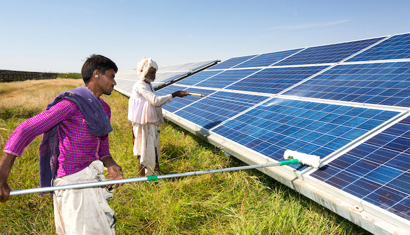

Solar Panels
In simple language aSolar panel
Is designed to absorb the sun's rays as a source of energyfor generating electricity or heating.
Solar energy is radient light and heat frpom the Sun that is harnessed using a
range of technologies such as solar power to generate electreicity, solar thermal
energy including solar water heating, and solar architecture.
We all know that solar photovoltanic (PV) panels transform sunlight into useable electricity,but few people know the actual science behind the process.This week on the blog we are going get into the noitty-gritty science behind soLAR .It can seem complicated, but in all boils down to the the photovoltanic effect; The ability of matter to emit electron when bathed in light.
Solar Panesl in INDIA
The Sun has been worshiped as a life-giver to our planet since ancient times. The industrial ages gave us the understanding of sunlight as an energy source. India is endowed with vast solar energy potential. About 5,000 trillion kWh per year energy is incident over India's land area with most parts receiving 4-7 kWh per sq. m per day. Solar photovoltaics power can effectively be harnessed providing huge scalability in India. Solar also provides the ability to generate power on a distributed basis and enables rapid capacity addition with short lead times. Off-grid decentralized and low-temperature applications will be advantageous from a rural electrification perspective and meeting other energy needs for power and heating and cooling in both rural and urban areas. From an energy security perspective, solar is the most secure of all sources, since it is abundantly available. Theoretically, a small fraction of the total incident solar energy (if captured effectively) can meet the entire country's power requirements.
Read More
Policies and Schemes regarding Solar Panels
The Indian government revised the Solar Mission in 2014. It targets for 100 GW installed capacity of solar electricity by 2022. To reach this ambitious target, the government announced several policies to promote solar energy.
You can find more information here:-
|
|
How Solar Energy Can concide with crop and Animal Agriculture?
Solar power is becoming increasing popular. Energy harvested from the sun provides
homes and businesses with clean power to meet their needs. Over time, solar panels
can drastically reduce costs. However, they take up quite a bit of space.
Researchers have found that plants will grow and produce below elevated solar panels,
and animals can still graze the land beneath the panels. Solar energy in agriculture has become possible,
and it has proven results. Plus, it allows another stream of income for farmers.
The Beginnings of Agrivoltaics
The University of Massachusetts Crop Research and Education Center has been researching the
compatibility of agriculture with solar energy generation, also known as agrivoltaics, since 2008.
In 2010, construction company owner Dave Marley partnered with researchers from the university to
put 70 solar panels in place, elevated seven feet above farmland, with zero disruption to the soil.
Installers left enough space between the solar panels to allow sunlight to reach the plants below.
The solar panels remain, as both the agricultural and solar farmers have benefited from the dual-use solar installations
The Beginnings of Agrivoltaics
The University of Massachusetts Crop Research and Education Center has been researching the
compatibility of agriculture with solar energy generation, also known as agrivoltaics, since 2008.
In 2010, construction company owner Dave Marley partnered with researchers from the university to
put 70 solar panels in place, elevated seven feet above farmland, with zero disruption to the soil.
Installers left enough space between the solar panels to allow sunlight to reach the plants below.
The solar panels remain, as both the agricultural and solar farmers have benefited from the dual-use solar installations
Benefits of Agrivoltaics
Both landowners and solar developers have benefited from dual-use solar installations.
For landowners, the solar panels provide self-generated energy, which decreases the cost of utility bills.
The panels also block the wind and limit soil erosion to maintain soil health.
Solar developers don’t have to spend as much time preparing the land for installation,
as most agriculture farms are already on level ground. Solar energy production increases
because of the cooler temperatures in farmland locations, limiting the panels’ overheating.
Crops Yield Beneath Solar Panels
Despite less sunlight reaching the crops beneath the solar installations, the crops still yield.
Foraging plants, like grasses, generated about 90% compared to the crops not covered by solar panels.
The University of Massachusetts has also grown other plants besides grazing grasses,
such as peppers, tomatoes, beans and cilantro. When placing the solar panels with three- to four-foot gaps between them,
the vegetable plants produced almost the same amount as those not beneath the panels.
Usually, turf or gravel is the foundation lying beneath solar installations,
but growing plants creates a safe, friendly environment for pollinators.
Other researchers in Minnesota have grown native plants under solar panels to encourage pollination.
The pollinators can then do their job and pollinate crops. Without pollination, crops can’t grow, and the economy collapses.
Although crop yields do not match the gains from full, open sunlight, the costs even out.
The solar panels provide energy for farmers, which reduces production costs.
Large farm equipment can’t harvest crops grown under solar installations.
Therefore, farmers must primarily harvest vegetables manually, so there are some limitations to what they can plant.
Solar Energy in Agriculture
Solar energy can coincide with crop and animal agriculture.
The National Renewable Energy Laboratory has continued to fund other research efforts in states across the country.
With continued research and application, the future of solar energy in agriculture
looks rewarding for energy conservators and farmers alike.
A growing number of farms and agricultural businesses are looking to solar to power their daily operations. Thanks in part to the Solar Energy Technologies Office's investments
